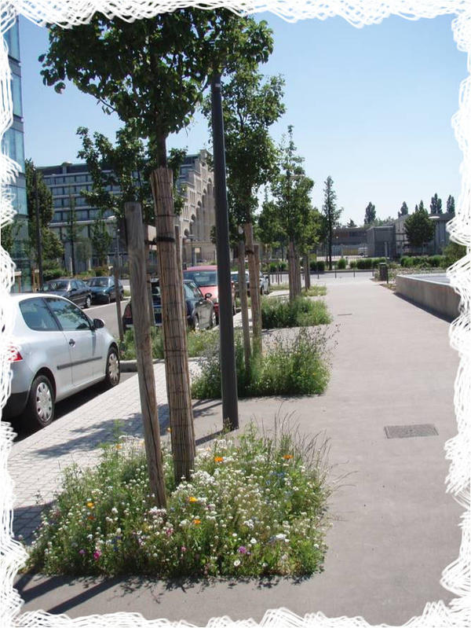
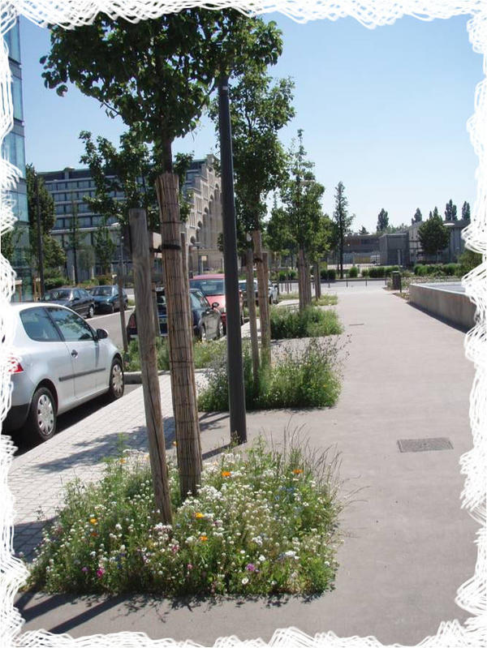
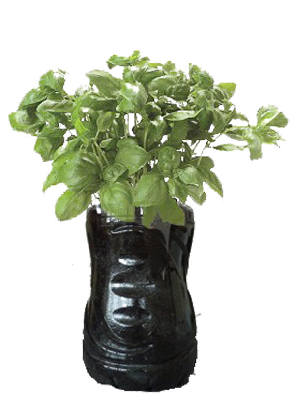
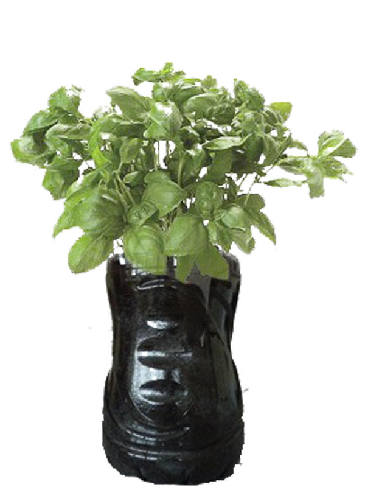

Pour que la ville devienne une nouvelle cité verte … et qu’elle profite à tous !
Les espaces publics à végétaliser sont les petits espaces non aménagés : pieds d’arbres, abords de mobiliers, de murs, des gazons....
 


Pour que la ville devienne une nouvelle cité verte … et qu’elle profite à tous !
Chez soi, les graines peuvent être semées au potager, dans une balconnière, un pot, une bouteille plastique…
 
